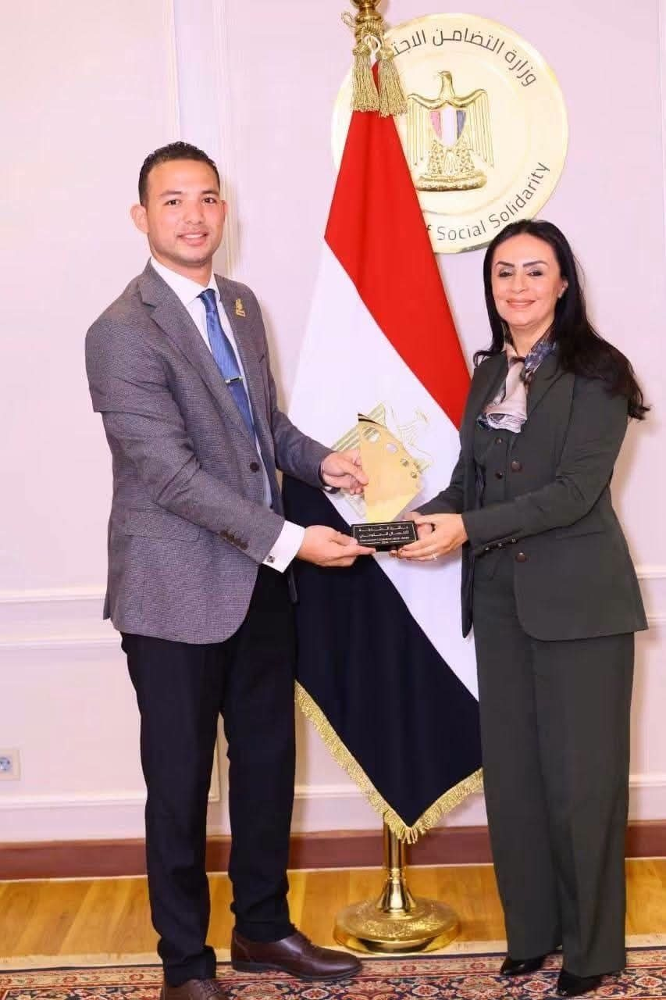
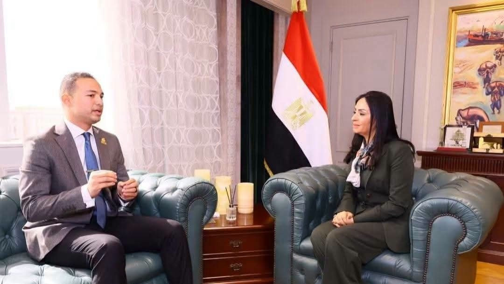
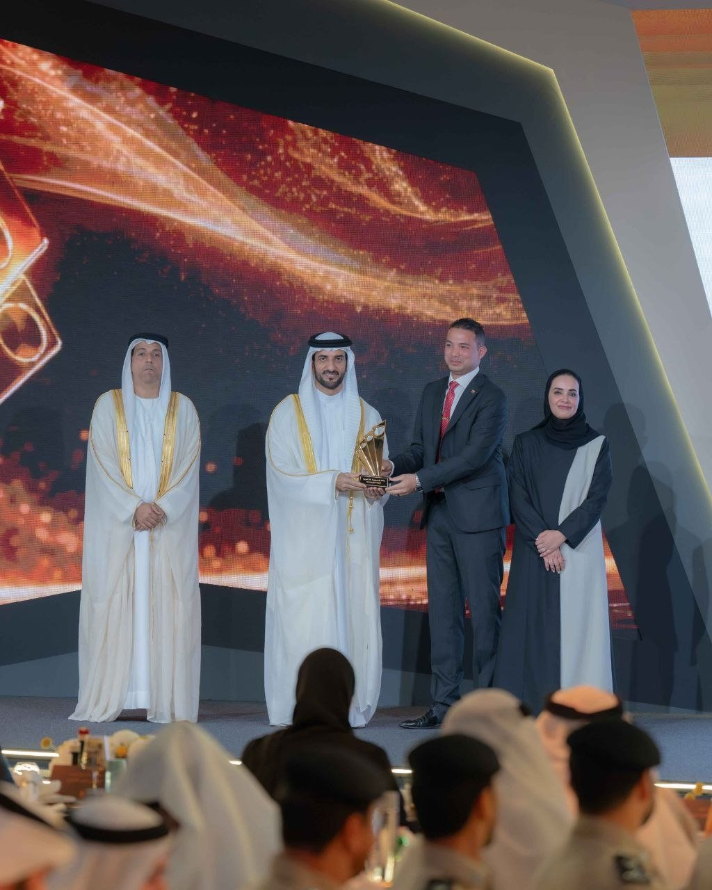

Minister of Social Solidarity honors Nour Shabaan for winning the Sharjah Government Communication Award 2026
Dr. Maya Morsy, Minister of Social Solidarity, received Nour Shabaan, a care-home graduate, to honor him for winning the Sharjah Government Communication Award 2026 in the category "Best Youth Initiative in Communication", an achievement that reflects the excellence of Egyptian youth and their ability to create, innovate and compete regionally and internationally.
Dr. Maya Morsy expressed her deep pride in this achievement, stressing that Nour Shabaan's success story is an inspiring example of the promising energy and exceptional ability of care-home youth, and that real opportunities, support and empowerment are a basic bridge for turning ambitions into tangible achievements.
The Minister affirmed that the Ministry gives great attention to caring for and empowering care-home youth, not only by providing protection and support, but also by investing in their abilities and talents and giving them the chance to prove themselves and take an active part in every field.
She added that the Ministry is keen to highlight successful and inspiring role models among its sons and daughters and to spotlight their achievements as leaders able to inspire their peers and root a culture of ambition, perseverance and hard work.
In this context, Dr. Maya Morsy directed that the Ministry's "Equal Educational Opportunities" program cover all tuition fees for Nour Shabaan to earn a doctorate.
For his part, Nour Shabaan expressed his happiness and pride in meeting the Minister of Social Solidarity and being honored, praising the Ministry's attention to care-home youth and its keenness to support the outstanding among them, and affirming that this honor is a strong push to keep succeeding and to develop initiatives that serve society and make a positive impact.
He added that the honor reflects the Ministry's move from the concept of "traditional care" to the wider horizons of empowerment and capacity building, out of its belief that every young person can succeed when given the chance, and that care-home youth are active partners in the march of development and in building the nation's future.



